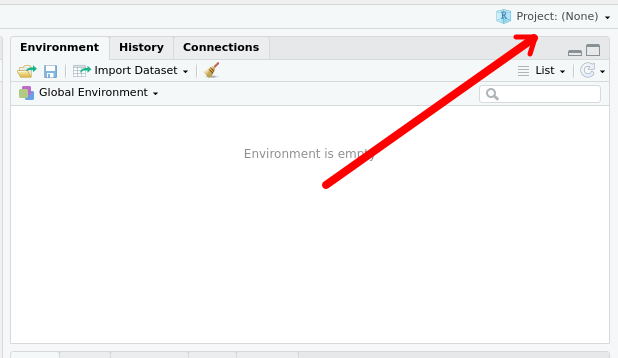
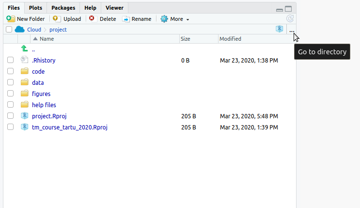
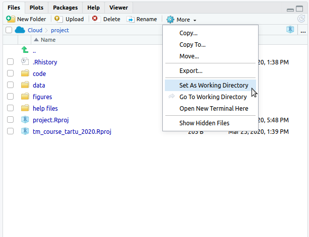
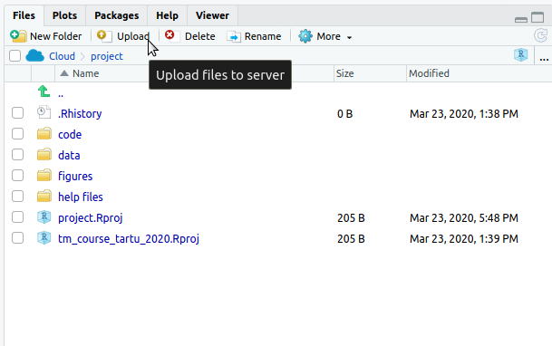
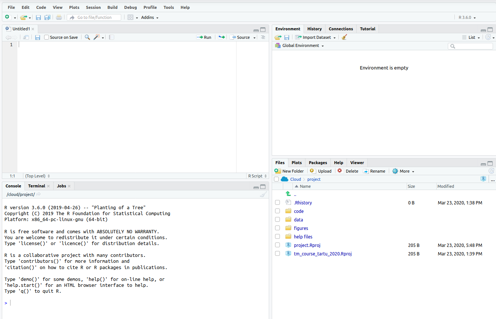

Peatükk 2 Mis on R? Mis on RStudio?
R on programmeerimiskeel ja vabavaraline arenduskeskkond, mis on mõeldud eelkõige andmete töötluseks, analüüsiks ja visuaalseks kuvamiseks. RStudio on abivahend, mis hõlbustab ja toetab R-i kasutamist sedavõrd, et võiks arvata, et tegemist on juba uue keskkonnaga. RStudio töötab hästi tavalises isiklikus arvutis (Windows, Mac, Linux jne), aga seda on võimalik kasutada ka läbi interneti. R-i saab kasutada ka ilma RStudiota ning kõik funktsioonid töötavad seal. RStudio teeb aga R-i kasutamise oluliselt lihtsamaks.
2.1 RStudio oma arvutis
2.2 Installimine
Isiklikule arvutile installige kõigepealt R (viimane versioon on ok) ja seejärel RStudio (viimane versioon on ok). Installimiseks antakse täpsed ja uusimad juhised järgnevatel lehtedel.
- Installige R: https://cran.rstudio.com/
- Windows: https://cran.rstudio.com/bin/windows/base/
- Mac: https://cran.rstudio.com/bin/macosx/
- Linux: https://cran.rstudio.com/bin/linux/ (vt readme-d)
- Installige RStudio: https://www.rstudio.com/products/rstudio/download/
2.3 Rstudio Cloud
Ilma installimata on võimalik kasutada ka RStudio Cloudi: https://rstudio.cloud/. Tehke endale kasutaja ‘sign up’ kaudu ning logige sisse. Iga oma RStudio töö jaoks võib siis teha eraldi projekti.

2.4 Materjalide avamine
Materjalid on jagatud eraldi .zip failis, mis tuleb alla laadida. Selle avamiseks RStudios on mitmeid võimalusi.
2.4.1 Isiklikus arvutis
Isiklikus arvutis pakkige kõigepealt failid lahti (extract). Kui klikkida selle peale Windowsis, siis mõnikord avab ta faile üksikuna .zipi sees, mis siin ei toimi.
Kui failid on avatud ja RStudio installitud, võib lihtsalt klikkida .Rproj failile. See avab RStudio õigest kohast nii, et kõik on juba seadistatud. Projektifaili võib avada ka RStudios vajutades kõigepealt paremal ülal nurgas olevale “Project: (None)” tekstile. Ja sealt Open project ja suunata see Rproj failile. Projektifaili kasutamine seab paika ka töökataloogi.

Kui projektifaili mitte kasutada, on oluline seadistada töökataloog. Selle jaoks vajutage alumise parempoolse kasti juures, kus on failid (veenduge, et Files sälk oleks valitud) ülal paremal kolme punktiga tähistatud kohale. Seejärel avaneb aken, kus liikuda õigesse kohta.

Kui olete lahtipakitud kataloogis, siis valige ülalt sinise hammasratta kõrvalt More ja Set As Working Directory. See käivitab konsoolis ka esimese käsu setwd(), mis seab kataloogi paika. Edaspidi saab kopeerida selle käsu näiteks faili algusesse, et saada kohe õigesse kohta. Töökataloogi on võimalik kontrollida käsuga getwd().

2.4.2 Pilves
Materjalide avamiseks RStudio Cloud-is tuleks kõigepealt luua projekt oma kasutajanime all. Ning projektis on näha sarnane koht failidega. Seal valida koht Upload - kus saab valida terve .zip faili, mis siis seal lahti pakitakse. Võib kasutada ka RStudiot pilves

2.5 RStudio tutvustus

RStudio vaade on tüüpiliselt selline nagu ülal näha. Akende asukohti saab muuta ja nende suhtelisi suurusi saab muuta, aga alguses on neid hea hoida paiga.
- Vasakul-ülal on skriptiaken;
- paremal-ülal on muutujad ja käskude ajalugu;
- vasakul-all on konsool, kus jookseb kood;
- paremal-all on failid, graafikud ja abi.
2.6 Stiilisoovitus
Veel üks stiilisoovitus. Lülitada sisse word-wrap ehk soft-wrap Selleks leia menüüst järgmine koht: Tools -> Global options -> Code -> Editing -> Soft-wrap R source files (lülita see sisse)
2.7 Soovitatav kirjandus
Lisamaterjalina soovitan kahte vabalt kättesaadavat teost.
- Garrett Grolemund, Hadley Wickham. 2017. R for Data Science. O’Reilly Media https://r4ds.had.co.nz/
- Julia Silge and David Robinson. 2017. Text Mining with R: A Tidy Approach. O’Reilly Media https://www.tidytextmining.com/